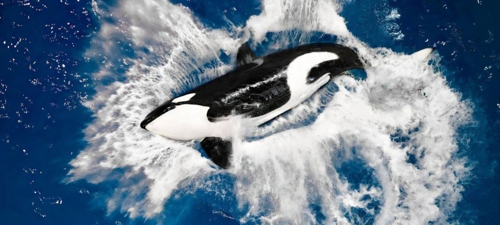

ORCAS
(Orcinus orca)

Hábitat
Las orcas (Orcinus orca) son mamíferos marinos que pertenecen a la familia de los delfines. Habitan en todos los océanos del planeta, desde las aguas frías del Ártico y la Antártida hasta zonas más templadas y tropicales. Generalmente se encuentran en áreas donde hay gran cantidad de alimento, como peces, focas y otros mamíferos marinos.
Estilo de vida
Las orcas viven en grupos familiares llamados manadas o pods. Estos grupos suelen estar liderados por una hembra adulta y permanecen juntos durante toda su vida. Son animales muy sociales e inteligentes que se comunican mediante sonidos y trabajan en equipo para cazar a sus presas.
5 Características de las orcas